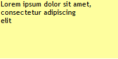
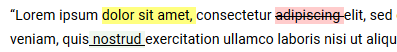
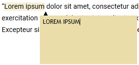
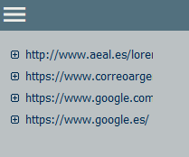

Para el correcto funcionamiento de la extensión es necesario que la misma esté cargada y en funcionamiento antes de cargar la página en la que se vayan a añadir anotaciones. Por este motivo, es necesario recargar todas las páginas abiertas
después de instalarlo si se desean añadir anotaciones.
Introducción
Mis notas es una extensión para Firefox que permite añadir anotaciones dentro de una página web de forma rápida. Una vez añadida una anotación, siempre que se vuelva a cargar la página se mostrará la misma exactamente en el mismo punto en el que se creó.
Esta extensión dispone de varios tipos de anotaciones, las cuales se pueden agrupar en 3 grupos principalmente:
Notas de texto
Notas multimedia
Notas de resaltado de Texto
Notas de texto
Crea un cuadrado de texto en el punto de la página seleccionado. Esta nota se puede mover por la página arrastrándola con el ratón, y se puede redimensionar arrastrando los bordes o las esquinas (hay un tamaño mínimo tanto para el ancho como para el alto
de la anotación). Para escribir texto, solamente es necesario pinchar en el interior del cuadro y empezar a escribir. Los cambios en la anotación se guardan al salir de la anotación (pinchar fuera de ella) o al soltar el ratón, en caso
de estar moviendo o redimensionando la nota.

Ejemplo de nota de texto.
Notas multimedia
Crea una nota de audio o de vídeo en el punto de la página seleccionado. Al crearla, esta nota se muestra como un icono que identifica el tipo de anotación que se ha añadido (un micrófono para las notas de audio y una cámara de vídeo para las notas de
vídeo). Al pulsar en el icono se activará la grabación y el color del icono cambiará a rojo. Al pulsar nuevamente en el icono se parará la grabación, y el icono cambiará nuevamente para indicar que se ha grabado el contenido (para las
notas de audio se mostrará una nota musical y para la de vídeo un fotograma de película). Pulsando nuevamente el icono se mostrará el reproductor multimedia, con el que se podrá reproducir la grabación. Encima del reproductor se muestra
el icono de una flecha, y al pulsarlo se ocultará nuevamente el reproductor volviendo a mostrar el icono anterior. Es posible mover el icono (o el reproductor) por la pantalla arrastrándolos con el ratón, así como redimensionar el reproductor
(las notas de audio solamente se pueden redimensionar horizontalmente, mientras que las de vídeo se pueden redimensionar en cualquier dirección, ajustándose el vídeo siempre al tamaño de la nota conservando el formato original). Esta anotación
también dispone de un tamaño mínimo a partir del cual no se puede reducir.
Ejemplo de nota multimedia.
Notas de resaltado de texto
Permiten resaltar un texto de la página al aplicarle un formato diferente. Este tipo de notas solamente se pueden aplicar sobre texto seleccionado de la página, y no es posible moverlas ni redimensionarlas. Existen varios tipos de notas de resaltado que
se pueden agregar, disponiendo cada una de ellas de un formato diferente:
Resaltar texto: Cambia el color de fondo del texto seleccionado, manteniendo el formato del mismo
Subrayar texto: Subraya el texto seleccionado, además de cambiar el color de fondo del mismo.
Tachar texto: Tacha el texto seleccionado, además de cambiar el color de fondo del mismo.
URL: Subraya y pone en negrite el texto seleccionado, además de cambiar el color de fondo del mismo. Al añadir esta anotación, se muestra un cuadro de diálogo para introducir una URL que se vinculará al texto seleccionado. Al
colocar el ratón sobre esta nota, el cursor cambiará a una mano, y al pulsar con el botón izquierdo se abrirá la página enlazada. Es posible cancelar la vinculación de una URL al crear la nota, borrar la URL vinculada. En este
caso el cursor del ratón no cambiará al situarse encima, y al pulsar se mostrará el cuadro de diálogo para vincular una URL.

Ejemplo de nota de resaltado de texto.
Cambio de texto
Es un tipo especial de anotación, que combina una nota de texto junto con una nota de resaltado de texto. Para crear una anotación de este tipo es necesario seleccionar un texto de la página, al cuál se le aplicará un color de fondo para resaltarlo y,
justo al final de dicho texto, se muestra una nota de texto. Este tipo de anotaciones no se pueden mover del punto en el que se crean, y solamente la nota de texto puede ser redimensionada desde cualquier borde excepto desde el borde superior.

Ejemplo de nota de cambio de texto.
Creación de notas
Actualmente esta extensión dispone de 2 métodos principales para la creación de nuevas anotaciones, ya sean de texto, multimedia o de resaltado. No siempre es posible añadir este tipo de anotaciones, por lo que cada método se comportará de forma diferente
dependiendo del tipo de anotación a crear. En los siguientes pasos vamos a ver ambos métodos de generación de anotaciones, comentando la forma correcta de añadir cada tipo de anotación.
Menú Contextual
Esta extensión añade una nueva opción al menú contextual del navegador. Ésta nueva opción, que se muestra con el icono y el nombre de la extensión (mis notas), se muestra al pulsar con el botón derecho en cualquier punto de la página. Esta nueva entrada
contiene un submenú en el que se indican todas las anotaciones que se pueden crear en cada momento.
Las anotaciones de texto y multimedia pueden añadirse en cualquier momento, por lo que estas opciones siempre estarán disponible en el menú contextual. Al seleccionar una de estas anotaciones, la misma se creará en el punto donde se pulsara con el botón
derecho del ratón para abrir el menú contextual.
Tanto para crear una nota de resaltado de texto como para crear una nota de cambio de texto es necesario seleccionar previamente el texto sobre el que se quiere aplicar la anotación. Al realizar esta acción, aparte de las anotaciones de texto y multimedia
se mostrarán las anotaciones de resaltado de texto y de cambio de texto.
Menú contextual de la página.
Atajos de teclado
La extensión dispone de un atajo de teclado para crear cada tipo de anotación. Al igual que ocurría con el menú contextual, los atajos de teclado se comportan de forma distinta en función del tipo de nota que se cree. Mientras que las notas multimedia
y de texto se pueden crear siempre (y se crearán en el punto de la página donde se haya pulsado con el ratón por última vez), las anotaciones de resaltado de texto y de cambio de texto solamente podrán crearse al tener un texto seleccionado
(en caso de no tenerlo no se creará ninguna anotación).
Aunque los valores de los atajos de teclado vienen definidos por defecto, es posible personalizarlos en la página de opciones de la extensión (ver apartado Opciones de este manual). Esta es la lista de atajos de teclado por defecto:
Nota de audio: Ctrl+Alt+A
Nota de video: Ctrl+Alt+V
Nota de texto: Ctrl+Alt+S
Nota de cambio de texto: Ctrl+Alt+C
URL: Ctrl+Alt+K
Resaltar texto: Ctrl+Alt+H
Subrayar: Ctrl+Alt+U
Tachar: Ctrl+Alt+X
Barra lateral
Al instalar esta extensión, se añade una nueva barra lateral al navegador. Al igual que el resto de las barras laterales, esta nueva barra se puede ocultar o mostrar en cualquier momento. Sin embargo, si se ha ocultado, al mostrarse la lista de anotaciones
aparecerá vacía. Será necesario recargar la página o cambiar de pestaña para que las anotaciones vuelvan a cargarse.
La barra lateral se divide principalmente en 2 partes:
Menú: Se sitúa en la esquina superior izquierda de la anotación, y muestra la lista de opciones generales de la extensión.
Lista de páginas: Listado de todas las páginas en las que se han creado anotaciones.

Barra lateral de la extensión.
Menú
Al pulsar en este botón se muestra un menú con opciones generales sobre la extensión. Cada opción afecta a un grupo concreto de páginas, por lo que no todas las opciones estarán siempre disponibles:
Exportar página actual: Crea un fichero XML con todas las notas de la página actual. Esta opción solamente estará activa cuando la página actual contenga anotaciones.
Exportar todo: Crea un fichero XML con todas las anotaciones creadas en la extensión.
Importar fichero XML: Importa una lista de anotaciones desde un fichero XML.
Copiar todo (páginas abiertas): Copia en el portapapeles el texto de todas las anotaciones. Solamente afecta a las páginas que están abiertas.
Borrar página actual: Borra todas las anotaciones de la página actual. Esta opción solamente estará activa cuando la página actual contenga anotaciones.
Borrar todo: Borra todas las anotaciones de la extensión.
Menú de la barra lateral.
Lista de páginas
Debajo del botón de menú se muestra una lista de las páginas en las que se han añadido anotaciones. Cada vez que se crea una nota en una nueva página, se añade un nuevo elemento a esta lista con el nombre de la página en la que se ha añadido la nota.
Por defecto, el nombre asignado a esta entrada es la URL de la página, pero es posible personalizarlo pulsando sobre el nombre de la página y escribiendo el nuevo nombre. Al situar el ratón sobre el nombre, se muestra el nombre completo
de la página.
Cada elemento de esta lista continene, a su vez, una lista con todas las notas añadidas a la página. A la izquierda del nombre de la página se muestra un icono con el que se puede mostrar/ocultar esta lista de notas. Por defecto, todas las páginas se
muestran plegadas, excepto si en la página actual hay anotaciones. En este caso, la página se sitúa en primer lugar y la lista se despliega automáticamente. Este listado se pliega automáticamente cada vez que se accede a una nueva página
o cada vez que se cambia de pestaña.
Lista de anotaciones en cada página
Cada una de las notas se representa como un cuadro de texto con el mismo color de fondo y de texto que la nota a la que representa y con la fecha y el usuario de creación como texto. Al situar el ratón encima de una nota se muestra el texto de la misma:
El texto seleccionado en el caso de las notas de resaltado.
El texto introducido en el caso de las notas de texto.
Una combinación de ambos para las notas de cambio de texto.
el tipo de anotación en el caso de notas multimedia.
Además, si la nota pertenece a la página actual, se desplaza la barra de desplazamiento hasta centrar lo máximo posible la nota en el centro de la página y se resalta la nota añadiendo un borde rojo a la misma.
Lista de páginas y anotaciones.
Menús contextuales
Aparte de la opción añadida al menú contextual del navegador, cada nota creada en la página dispone de un menú contextual con diversas acciones que afectarán al elemento seleccionado o los elemeentos contenidos dentro de dicho elemento. Así, tendremos
1 menú contextual distinto en cada uno de los elementos de la extensión:
Menú contextual de las anotaciones: Estará disponible en cada una de las notas que se agreguen a una página.
Menú contextual de la página (barra lateral): Estará disponible en cada una de las páginas mostradas en la barra lateral.
Menú contextual de las anotaciones (barra lateral): Estará disponible en cada una de las notas mostradas en la barra lateral.
Menú contextual de las anotaciones
Se mostrará al pulsar con el botón derecho sobre alguno de los elementos que componen una nota. Al igual que ocurre en todos los menús contextuales de esta anotación, las opciones del menú contextual no estarán siempre disponibles, aunque en este caso
las opciones que no estén disponibles no se mostrarán directamente. En este caso la lista de opciones permitidas dependerá del tipo de nota sobre la que se abra el menú contextual. Las opciones disponibles en este menú son:
Cambiar color de texto: Cambia el color del texto de la anotación. Esta opción abre una ventana emergente para seleccionar el nuevo color, que se aplicará también a la representación de la nota en la barra lateral. Esta
opción estará siempre disponible, y en función del tipo de nota este cambio se aplicará de distinta forma:
Nota de texto: Texto dentro de la nota.
Nota de resaltado: Texto de la selección
Nota de cambio de texto: Texto dentro de la nota de texto.
Nota multimedia: Iconos y controles.
Cambiar color de fondo: Cambia el color de fondo de una anotación. Al seleccionar esta opción se abre una ventana emergente para seleccionar el nuevo color. Este color se aplicará tanto al fondo de la nota (en el caso de
las notas de cambio de texto, solamente se aplica a la nota de texto) como al fondo de la representación de la misma en la barra lateral.
Cambiar color de texto en la selección: Esta opción solamente está disponible en las anotaciones de cambio de texto, y permite actualizar el color del texto seleccionado en la nota. Este cambio de color no afecta a la referencia
a la anotación de la barra lateral.
Editar URL: Esta opción solamente está disponible en las anotaciones de URL. Abre una ventana emergente para cambiar o borrar la URL de la anotación.
Menú contextual de las anotaciones (2)
Cambiar color de fondo en la selección: Esta opción solamente está disponible en las anotaciones de cambio de texto, y permite actualizar el color de fondo del texto seleccionado en la nota. Este cambio de color no afecta
a la referencia a la anotación de la barra lateral.
Borrar elemento: Borra permanentemente la anotación de la página (esta operación no se puede deshacer). ADVERTENCIA: en las notas de resaltado de texto (y de cambio de texto), si hay más de una anotación en el mismo elemento
HTML y se borra una de esas anotaciones, el resto de anotaciones pueden dejar de funcionar. Esto es debido a la forma en la que las anotaciones de resaltado de texto se guardan.
Copiar texto: Copia el texto de la nota. Esta opción tiene diferentes efectos en función del tipo de anotación:
Nota de texto: Copia el texto escrito dentro de la nota.
Nota multimeda: Esta opción no está disponible.
Cambio de texto: Copia el texto escrito en el cuadro de texto.
Notas de resaltado de texto: Copia el texto resaltado.
Notas de URL: Copia el texto resaltado junto con el enlace vinculado.
Menú contextual en una nota.
Menú contextual de la página (barra lateral)
Cada página del listado tiene un menú contextual que se puede abrir pulsando con el botón derecho encima de la página. Al igual que en el menú contextual de la extensión, las opciones de este menú no siempre pueden aplicarse, por lo que no siempre estarán
disponibles todas las opciones del menú:
Abrir URL: Abre la URL de la página en una pestaña nueva. Esta opción está siempre disponible.
Borrar página: Borra todas las notas de la página actual. Al realizar esta acción, la página también se elimina del listado de páginas.
Exportar página actual: Genera un fichero XML con el listado de notas de la página. Esta opción está siempre disponible.
Copiar todo (páginas abiertas): Copia todas las anotacioens de la página. Esta opción solamente estará disponible cuando la página esté abierta.
Recargar anotaciones: Recarga todas las anotaciones de la página. Esta opción solamente estará disponible si la página está abierta.
Menú contextual en una página de la barra lateral.
Menú contextual de la anotación (barra lateral)
Cada una de las anotaciones dispone, a su vez, de otro menú contextual con acciones a realizar con la propia nota. Nuevamente, algunas opciones solamente estarán disponibles cuando la página de la nota esté abierta:
Borrar elemento: Borra la nota seleccionada. Esta opción siempre está disponible y no se puede deshacer.
Cambiar color de fondo: Cambia el color de fondo de la nota. Esta opción se comporta de la misma forma que la opción "Cambiar color de fondo" en las anotaciones de la página, y solamente está disponible cuando la página está
abierta.
Cambiar color de texto: Cambia el color de texto de la nota. Esta opción se comporta de la misma forma que la opción "Cambiar color de texto" en las anotaciones de la página, y solamente está disponible cuando la página está
abierta.
Copiar texto: Copia el texto de la nota. Esta opción solamente está disponible cuando la página está abierta.
Menú contextual en una nota de la barra lateral.
Opciones de la extensión:
Desde esta página se tiene accesso a la configuración de la extensión. Consta de 3 pestañas diferentes, 2 de personalización de la extensión y una de ayuda (donde se ubica este manual):
Colores: Permite personalizar el aspecto que tendrán las anotaciones al crearse.
Atajos de teclado: Permite modificar los atajos de teclado definidos en la extensión.
Ayuda: Muestra este manual de ayuda.
Colores
En esta página se puede personalizar tanto el nombre que se mostrará como autor de cada nota, como las opciones por defecto de cada tipo de nota. Al lado de dichas opciones se muestra una nota de ejemplo para previsualizar los cambios realizados. De forma
adichional, los controles validan el valor introducido en cada opción, cambiando de aspecto si el valor es incorrecto para esa propiedad. Las opciones configurables en cada nota se pueden dividir en 2 grupos dependiendo de la propiedad
a la que afecten:
Color: Fijan los colores por defecto que se aplicarán a la nota. El valor se puede introducir tanto escribiendo directamente el código del color (en hexadecimal) como pulsando en el botón de color que hay al lado del título.
Esta acción abrirá una nueva ventana emergente de selección de color. Estas opciones se pueden personalizar individualmente en cada nota una vez creada.
Opacidad: fijan los valores de opacidad que se aplicarán a la nota. El valor se puede introducir tanto escribiendo directamente el grado de opacidad en tanto por ciento en el cuadro de texto como moviendo el control deslinzante
situado al lado de dicho campo. Estos valores no pueden ser modificados posteriormente, pero su valor solamente afectará a las nuevas notas (los valores de opacidad de las notas existentes no se pueden modificar de ninguna forma).
Opciones de personalización de las notas de texto.
Colores (2)
Los cambios realizados en cada una de las opciones se mostrarán automáticamente en la nota de ejemplo, pero no se guardará automáticamente. Para ello será necesario utilizar los botones situados al final de la página, y que permiten realizar las siguientes
opciones:
Guardar: Guarda los valores actuales de color y opacidad de todas las anotaciones, así como el nombre de usuario. Al pulsarlo, se mostrará un mensaje indicando el resultado de la operación. Así, si alguno de los datos introducidos
no es correcto, este mensaje indicará el problema y no se guardarán los datos.
Cancelar: Restablece los valores por defecto de cada nota, así como el nombre de usuario.
Valores por defecto: Restaura los valores por defecto definidos inicialmente en la extensión. Estos valores no se guardarán hasta que se pulse el botón "Guardar".
Botonera de la página de configuración de colores.
Atajos de teclado
Permite personalizar las combinaciones de teclas que se utilizarán para cada atajo de teclado. Estas combinaciones de teclas tienen unas restricciones que será necesario cumplir:
No se pueden definir los atajos de teclado ya usados por Firefox. En caso de definirlo, al presionar la combinación de teclas se ejecutará la acción de Firefox y no de la extensión.
Debe ser una combinación de 2 o 3 teclas según el siguiente criterio:
Tecla Ctrl, Alt o Command
Tecla Ctrl, Alt, Command o Shift (esta tecla es opcional)
Letra, número, tecla de función (F1-F12) o letras de símbolos (solamente hay una serie de símbolos válidos. Al pulsar una letra, la extensión validará que es una opción válida antes de añadirla. En caso de no serla se mostrará
un error).
Al definir la combinación de teclas, cada tecla se debe presionar individualmente. Sin embargo, para utilizar el atajo será necesario pulsar todas las teclas a la vez.
Página de configuración de atajos de teclado.
Atajos de teclado (2)
Los atajos de teclado no siempre estarán disponibles, y su comportamiento variará en función del tipo de nota que se añada:
Notas de resaltado de texto y de cambio de texto: Solamente se podrán utilizar cuando se haya seleccionado un texto en la página. Al pulsar la combinación de teclas, aplicará la nota sobre el texto seleccionado. En caso de no
haber texto seleccionado no sucederá nada.
Notas de texto y multimedia: Se pueden utilizar en cualquier momento. Al pulsar la combinación de teclas se crea una nota en el último punto en el que se pulsó con el ratón dentro de la página. Si no se ha llegado a pulsar con
el ratón en ningún punto de la pantalla, la nota se creará en la posición 10, 10.
Al igual que en las opciones de color, al cambiar un atajo de teclado éste no se cambia directamente, si no que será necesario utilizar los botones situados al final de la página para aplicar los cambios. Tanto los botones disponibles como su funcionamiento,
son exactamente los mismos que en la página de opciones de colores.
Botonera de la página de personalización de atajos de teclado.